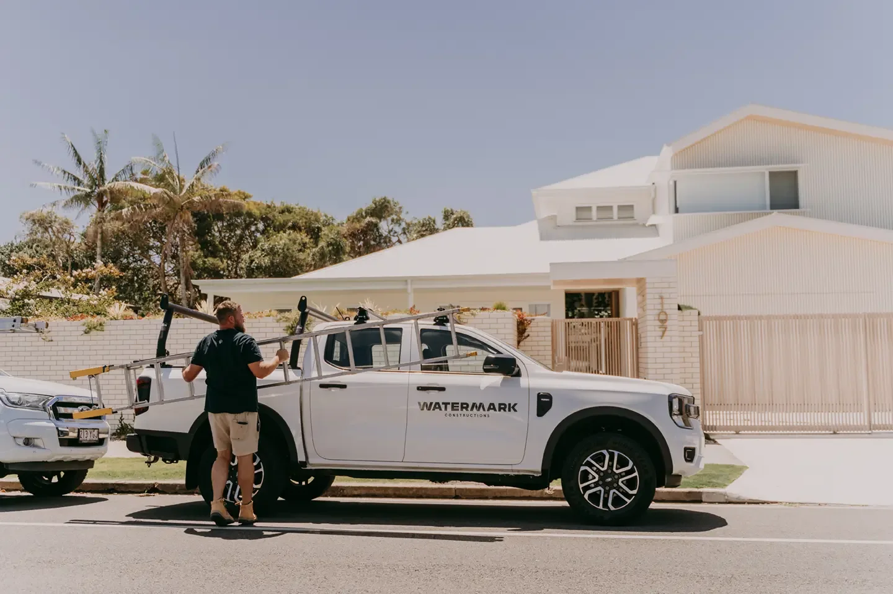
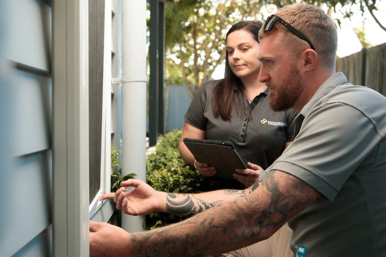

Insurance repair builders,when catastrophe hits.
The customer is our priority. Watermark Constructions has repaired more than 62,000 properties for Australia's major insurers since 2000. From everyday claims to the biggest weather events Queensland has seen, we're there when it matters.
Agile for BAU. Built for catastrophe.
We work closely with our insurer partners and clients through the life of every claim, with a view that even the smallest changes and efficiencies can make a large difference to the outcome for the client, the builder and the occupant combined.
We have extensive repair knowledge spanning the impacts of natural disasters, coupled with an impressive trade resume. We're adept at managing everyday damage claims (BAU) along with those presented by catastrophe, and our capacity to deploy resources on short notice to any location in Queensland has seen us embedded in communities affected by cyclone, flood and hail, supporting home and business owners through recovery.


Referred to us by your insurer? Here's what happens next.
From the first phone call to the final handover, one team looks after you. No chasing, no handballing between trades.
Make Safe
We respond around the clock to secure the property, stop further damage and keep you and your family safe.
Assessment
We assess the damage and scope the repairs, working directly with your insurer so you don't have to relay information between us.
Your dedicated team
A project administrator, a project manager and a site supervisor are allocated to your claim and stay with it until the job is done.
Repairs and handover
Repairs are completed to current building standards, then handed back with a final walk through.
Properties repaired
For multiple insurers since 2000.
Make Safe response
365 days a year, thousands completed.
Catastrophe events

Major QLD weather events since 2006.
A dedicated team on every claim.
We allocate a project administrator, a project manager and a site supervisor to each claim. That team is the insured's direct contact for the life of the repairs, which builds trust, insight into the claim and a tight knit crew able to solve issues promptly as they arise.
24/7/365 Make Safe
Having completed thousands of Make Safe responses, we minimise and mitigate the risk of additional damage while securing the safety of property owners and their loved ones.
Rapid deployment
Crews mobilised from the nearest base, a local operation established, and local contractors engaged so we can resource multiple regions at once without dropping quality.
Everyday claims (BAU)
The same discipline on a single kitchen flood as on a cyclone. Clear communication, tidy scheduling and a finish that brings the property to current standards.
Customer care
We understand the toll repairs take on a family or business. We build relationships of relevance with every insured, and work to impart a feeling of being our only customer.
Vulnerable customers
A broad team with the empathy and experience to support vulnerable or sensitive customers, with particular focus on those escaping from or experiencing domestic violence.
Built to standard
From awnings and roofs to major structural upgrades, repairs bring older properties up to current building standards, including cyclonic region requirements.
Two decades on the front line.
Every major Queensland weather event since 2006, and the communities we helped rebuild afterwards.
The questions we hear most.
Can't see yours? Call us on 1300 377 792 and the team will talk it through.
Do I pay you or my insurer?
In most cases your insurer manages the claim and pays for the approved repairs, and you pay your policy excess. We work with your insurer throughout, so you are not chasing two parties. Your claim contact can confirm the details of your policy.
How long does the assessment take?
It depends on the type of damage and, after a major weather event, how many properties are affected at once. We make safe first, then assess, and your project team will give you a realistic timeframe as soon as the scope is known. After Tropical Cyclone Debbie, our crews were on the ground within 48 hours.
Can I choose my own materials?
Repairs are scoped with your insurer to bring the property back to its condition before the damage, and to current building standards where required. If there are options, your project team will talk them through with you. Anything beyond the approved scope needs to be agreed with your insurer first.
What is a Make Safe?
It is the urgent first response that stops damage getting worse and keeps people safe, such as securing a damaged roof, weatherproofing openings or isolating hazards. It happens before the full repairs are scoped.
Who do I call after hours?
Call 1300 377 792. Our Make Safe response runs 24/7, 365 days a year.
Will you deal with my strata manager or landlord?
Where it applies, yes. We are used to managing multiple stakeholders on a single job, including owners, strata and property managers, and your project administrator will keep everyone updated.
People like us, do things like this.
 Insurance Repair
Insurance RepairRockhampton Hail
Giant hailstones wreaked havoc across central Queensland in April 2020, causing an estimated $850 million in damage. Over 1,400 homes and businesses rebuilt.
 Insurance Repair
Insurance RepairTropical Cyclone Debbie
The strongest cyclone to strike Queensland since Marcia. Crews mobilised within 48 hours, 1,532 properties repaired across the Whitsundays.